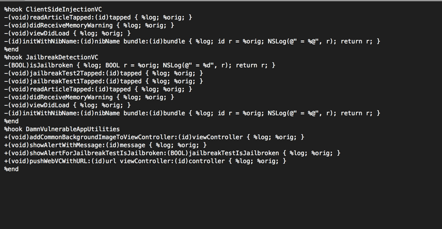

In the previous articles, we have seen how applications like Snoop-it can trace method calls specific to the application at runtime. This is very important in deducing the flow of the application. The same process can be performed by using a perl script named Logify.pl that comes installed with Theos. The script takes input as a header file and generates the hooking code that we can add in our tweak. We can also specify the classes we want to check. Once the tweak is installed on the device, whenever a method for that particular class is called, the tweak logs out the method along with the arguments to syslog. The first step here is to get the header files for a particular application. You can get the header files by using the -H option in class-dump-z. Once the headers folder is generated, you can copy it to your system.
Now we can use the Logify.pl script on these header files to generate our tweak. In this case, we are testing on Damn Vulnerable iOS application. Let’s add all the classes for which we want to log the method calls. In our case, we select three classes for which we want to trace the method calls, ClientSideInjectionVC, JailbreakDetectionVC and DamnVulnerableAppUtilities.
This is how our Tweak.xm file looks like.

Now let’s create a tweak and replace its Tweak.xm file with our own. Also, give the filter as the bundle identifier for DVIA, as we only want to trace calls for DVIA. Have a look at the previous article if you are new to writing tweaks.
Build the package.
Now install it on your device and respring your device.
Now check the folder /Library/MobileSubstrate/DynamicLibraries on your device to see whether the tweak was installed, and sure enough, we can see that it has been installed.
Now run the DVIA app. Make sure your device is connected to your computer and go to Xcode —> Window —> Organizer —> Devices & select your device and click on Console. You will see the DVIAMethodTracer tweak being loaded into your application.
And now as you browse around in the application and invoke methods for the particular classes that we have set up Logify for, you will see that these methods are logged along with the value of their arguments.
Logify can be a very useful tool in figuring out the order in which methods are called and hence deducing a lot about the flow of the application.